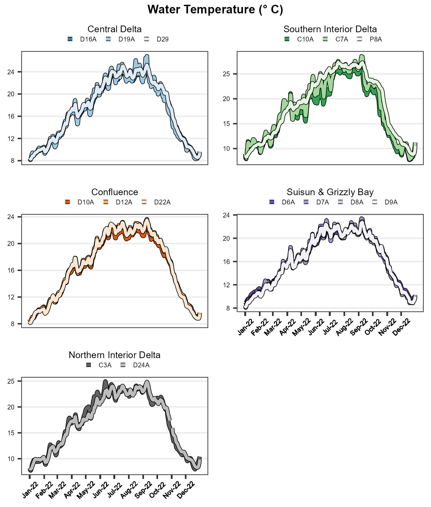
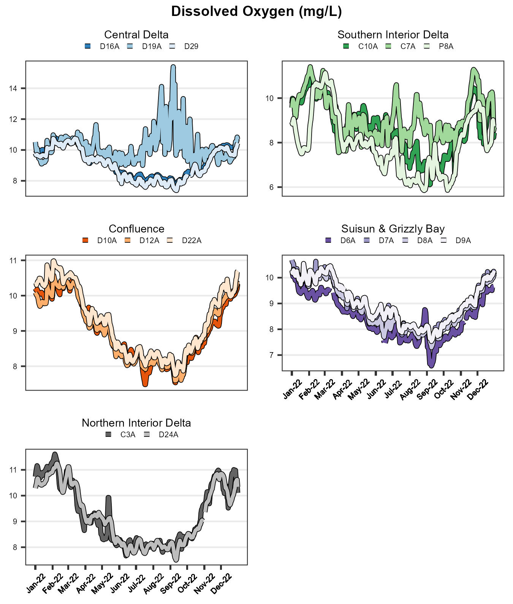
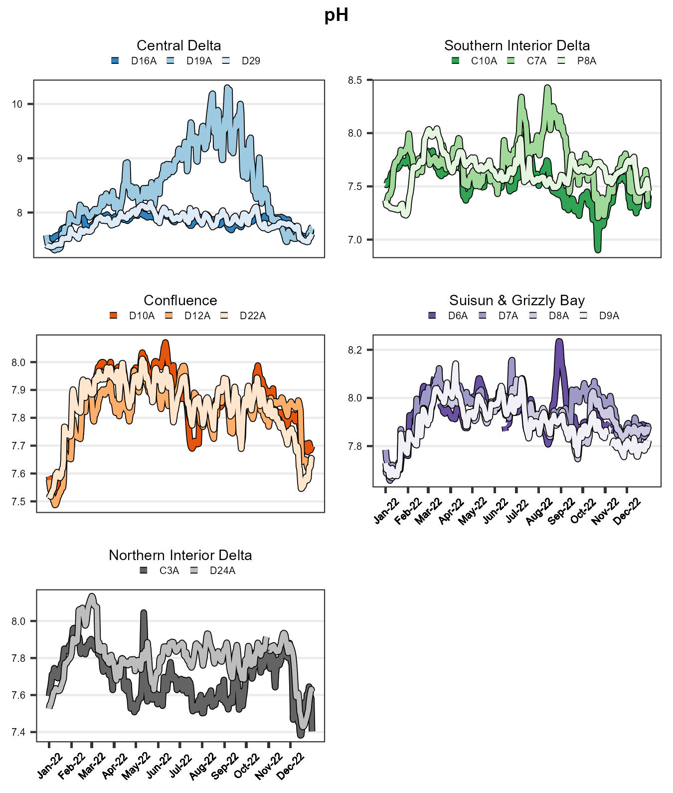
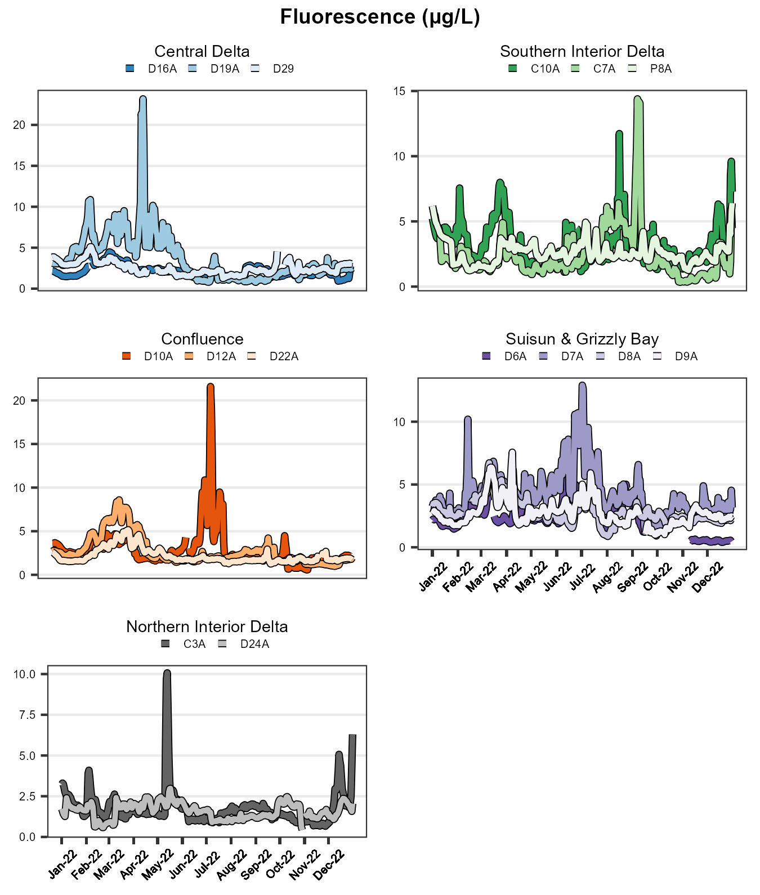

Current Report
Methods
Continuous data were collected for the water quality parameters shown in Table 1. Each of the 15 monitoring stations collected continuous data for water temperature (WT), pH, dissolved oxygen (DO), surface-specific conductance (SpC), chlorophyll a fluorescence, and turbidity. Additionally, sensors were installed at the Antioch, Mallard Island, and Martinez stations in the 1990’s to monitor bottom SpC. Along with river stage data measured at the Mallard Island and Martinez stations, these bottom SpC measurements determine compliance with the mandated salinity standard (also known as X2) set by the State Water Resources Control Board (SWRCB) in the 1995 Bay-Delta Plan. Except for bottom-specific conductance, all water samples were collected 1-meter below the water surface using a float-mounted YSI EXO2 multi-parameter water quality sonde. In contrast, bottom-specific conductance was measured at 1.5 meters above the channel bottom using a YSI EXO1 sonde. Water quality data was recorded at 15-minute intervals.
| Parameter | Units | Frequency |
|---|---|---|
| Water Temperature | °C | 15 minute instantaneous |
| Specific Conductance | µS/cm | 15 minute instantaneous |
| DO | mg/L | 15 minute instantaneous |
| pH | unitless | 15 minute instantaneous |
| Turbidity | FNU | 15 minute instantaneous |
| Fluorescence | µg/L | 15 minute instantaneous |
QA Status
Quality assurance and control measures were applied according to CEMP’s Quality Assurance Project Plan (QAPP) (available upon request). Only data validated as “Good Data” according to Section 22 of the QAPP were analyzed for this report.
Regions
The daily averages of the continuous 15-minute data collected for air and water temperature, pH, DO, surface and bottom SpC, chlorophyll a fluorescence, and turbidity for calendar year 2022 are shown in Figures 2 - 7. The range of monthly DO values at the Stockton station is shown below.

Northern Interior Delta
The Northern Interior Delta stations had surface specific conductance values that ranged from 105 μS/cm (C3A in July) to 1509 μS/cm (D24A in November). Surface turbidity values ranged from 0.82 FNU (C3A in October) to 129.15 FNU (C3A in December). Surface water temperature values ranged from 7.71 ° C (C3A in January) to 24.94 ° C (C3A in June). Surface dissolved oxygen values ranged from 7.5 mg/L (D24A in September) to 11.61 mg/L (C3A in February). Surface pH values ranged from 7.38 (C3A in December) to 8.13 (D24A in March). Surface fluorescence values ranged from 0.43 μg/L (D24A in October) to 10.07 μg/L (C3A in May).
| Statistic | Dissolved Oxygen (Surface) | Fluorescence (Surface) | pH (Surface) | Specific Conductance (Surface) | Turbidity (Surface) | Water Temperature (Surface) |
|---|---|---|---|---|---|---|
| mg/L | µg/L | µS/cm | FNU | ° C | ||
| MIN | 7.5 | 0.43 | 7.38 | 105 | 0.82 | 7.71 |
| MAX | 11.61 | 10.07 | 8.13 | 1509 | 129.15 | 24.94 |
| AVERAGE | 9.24 | 1.66 | 7.75 | 225 | 5.86 | 17.09 |
Southern Interior Delta
The Southern Interior Delta stations had surface specific conductance values that ranged from 73 μS/cm (C10A in October) to 832 μS/cm (P8A in February). Surface turbidity values ranged from 0.25 FNU (C7A in February) to 34.87 FNU (P8A in December). Surface water temperature values ranged from 7.73 ° C (C10A in December) to 28.55 ° C (C7A in September). Surface dissolved oxygen values ranged from 5.85 mg/L (P8A in August) to 11.41 mg/L (C7A in February). Surface pH values ranged from 6.9 (C10A in October) to 8.43 (C7A in August). Surface fluorescence values ranged from 0.34 μg/L (C7A in October) to 14.39 μg/L (C7A in September).
| Statistic | Dissolved Oxygen (Surface) | Fluorescence (Surface) | pH (Surface) | Specific Conductance (Surface) | Turbidity (Surface) | Water Temperature (Surface) |
|---|---|---|---|---|---|---|
| mg/L | µg/L | µS/cm | FNU | ° C | ||
| MIN | 5.85 | 0.34 | 6.90 | 73 | 0.25 | 7.73 |
| MAX | 11.41 | 14.39 | 8.43 | 832 | 34.87 | 28.55 |
| AVERAGE | 8.6 | 2.72 | 7.63 | 465 | 3.97 | 18.05 |
Central Interior Delta
The Central Interior Delta stations had surface specific conductance values that ranged from 255 μS/cm (D29 in May) to 2078 μS/cm (D16A in November). Surface turbidity values ranged from 0.15 FNU (D19A in September) to 27.58 FNU (D19A in February). Surface water temperature values ranged from 8.14 ° C (D19A in January) to 26.8 ° C (D19A in September). Surface dissolved oxygen values ranged from 7.37 mg/L (D29 in September) to 15.39 mg/L (D19A in September). Surface pH values ranged from 7.31 (D19A in January) to 10.3 (D19A in September). Surface fluorescence values ranged from 0.78 μg/L (D19A in September) to 23.17 μg/L (D19A in April).
| Statistic | Dissolved Oxygen (Surface) | Fluorescence (Surface) | pH (Surface) | Specific Conductance (Surface) | Turbidity (Surface) | Water Temperature (Surface) |
|---|---|---|---|---|---|---|
| mg/L | µg/L | µS/cm | FNU | ° C | ||
| MIN | 7.37 | 0.78 | 7.31 | 255 | 0.15 | 8.14 |
| MAX | 15.39 | 23.17 | 10.30 | 2078 | 27.58 | 26.8 |
| AVERAGE | 9.5 | 2.76 | 8.03 | 576 | 4.98 | 17.17 |
Confluence
The Confluence stations had surface specific conductance values that ranged from 236 μS/cm (D22A in January) to 17901 μS/cm (D10A in November). Bottom specific conductance values ranged from 369 μS/cm (D12A in January) to 18323 μS/cm (D10A in November). Surface turbidity values ranged from 5.12 FNU (D12A in June) to 70.17 FNU (D10A in July). Surface water temperature values ranged from 8.14 ° C (D22A in January) to 23.65 ° C (D12A in September). Bottom water temperature values ranged from 8.49 ° C (D12A in January) to 23.51 ° C (D12A in September). Surface dissolved oxygen values ranged from 7.48 mg/L (D10A in July) to 10.98 mg/L (D22A in February). Surface pH values ranged from 7.49 (D12A in January) to 8.07 (D10A in June). Surface fluorescence values ranged from 0.57 μg/L (D10A in November) to 21.59 μg/L (D10A in July).
| Statistic | Dissolved Oxygen (Surface) | Fluorescence (Surface) | pH (Surface) | Specific Conductance (Surface) | Specific Conductance (Bottom) | Turbidity (Surface) | Water Temperature (Surface) | Water Temperature (Bottom) |
|---|---|---|---|---|---|---|---|---|
| mg/L | µg/L | µS/cm | µS/cm | FNU | ° C | ° C | ||
| MIN | 7.48 | 0.57 | 7.49 | 236 | 369 | 5.12 | 8.14 | 8.49 |
| MAX | 10.98 | 21.59 | 8.07 | 17901 | 18323 | 70.17 | 23.65 | 23.51 |
| AVERAGE | 9.12 | 2.58 | 7.83 | 5778 | 7585 | 14.02 | 16.62 | 16.57 |
Grizzly/Suisun Bay
The Grizzly/Suisun Bay stations had surface specific conductance values that ranged from 456 μS/cm (D9A in January) to 31901 μS/cm (D6A in September). Bottom specific conductance values ranged from 10879 μS/cm (D6A in January) to 34246 μS/cm (D6A in October). Surface turbidity values ranged from 4.6 FNU (D7A in September) to 142.74 FNU (D7A in July). Surface water temperature values ranged from 8.08 ° C (D7A in January) to 23.4 ° C (D7A in September). Bottom water temperature values ranged from 9.02 ° C (D6A in January) to 22.27 ° C (D6A in September). Surface dissolved oxygen values ranged from 6.58 mg/L (D6A in September) to 10.69 mg/L (D7A in January). Surface pH values ranged from 7.66 (D7A in January) to 8.24 (D6A in August). Surface fluorescence values ranged from 0.4 μg/L (D6A in December) to 12.9 μg/L (D7A in July).
| Statistic | Dissolved Oxygen (Surface) | Fluorescence (Surface) | pH (Surface) | Specific Conductance (Surface) | Specific Conductance (Bottom) | Turbidity (Surface) | Water Temperature (Surface) | Water Temperature (Bottom) |
|---|---|---|---|---|---|---|---|---|
| mg/L | µg/L | µS/cm | µS/cm | FNU | ° C | ° C | ||
| MIN | 6.58 | 0.4 | 7.66 | 456 | 10879 | 4.6 | 8.08 | 9.02 |
| MAX | 10.69 | 12.9 | 8.24 | 31901 | 34246 | 142.74 | 23.4 | 22.27 |
| AVERAGE | 8.83 | 3.01 | 7.92 | 17299 | 27585 | 31.62 | 16.34 | 16.21 |
Parameters
Water Temperature
Average daily water temperatures in the estuary ranged from 7.71 ° C to 28.55 ° C (Figure 2), with fairly similar values across all regions. Temperatures were greater in the summer months and lowest in the winter.

Specific Conductance
Average daily surface-specific conductance for the estuary ranged from 73 μS/cm to 31901 μS/cm (Figure 3). The lower values were observed at the Northern and Southern Interior Delta stations and the highest at the more tidally influenced Grizzly/Suisun Bay stations (Figure 3).

Dissolved Oxygen
Average daily DO values in the estuary ranged from 5.85 mg/L to 15.39 mg/L (Figure 4). Recorded daily averages did not fall below the standard set by the CVRWQCB in the Basin Plan (CVRWQCB, 1998). The monthly average DO levels at the Stockton station did not fall below the 5.0 mg/L standard set by the CVRWQCB (1998). In addition, the monthly average DO levels dropped below the 6.0 mg/L standard (SWRCB, 1995) for the passage of fall-run Chinook salmon through the ship channel in September and October for the September through November control period.

pH
Average daily pH levels at all stations in the estuary ranged from 6.9 to 10.3 (Figure 5). The Central Delta station D19A showed an increase in pH values from June to October.

Turbidity
Average daily turbidity levels at all stations in the estuary ranged from 0.15 FNU to 142.74 FNU (Figure 6). The Southern Interior Delta stations showed a significant increase in turbidity in December. In addition, C3A showed a substantial spike in turbidity values in December. D10A in the Confluence experienced a spike in July.

Chlorophyll a Fluorescence
Average daily chlorophyll a fluorescence recorded at all stations ranged from 0.34 μg/L to 23.17 μg/L (Figure 7). Values at D10A in the Confluence showed a significant increase in June. Values at D19A decreased in the summer months. C3A in the Northern Interior Delta spiked in May.

References
[CVRWQCB] Central Valley Regional Water Quality Control Board. (1998). Water Quality Control Plan for the California Regional Water Quality Control Board Central Valley Region, the Sacramento River Basin, and San Joaquin River Basin [Basin Plan] (4th ed.).
[SWRCB] State Water Resources Control Board. (1995). Water Quality Control Plan for the San Francisco Bay/Sacramento-San Joaquin Estuary [Bay-Delta Plan] (Adopted May 22, 1995, pursuant to Water Right Order 95-1). Sacramento, CA.
[SWRCB] State Water Resources Control Board. (1999). Water Rights Decision 1641 for the Sacramento-San Joaquin Delta and Suisun Marsh (Adopted December 29, 1999, Revised in Accordance with order WR2000-02 March 15, 2000). Sacramento, CA.
Archived Reports
Old EMP continuous water quality reports can be found here